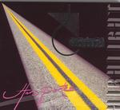

| Artist: | Chardeau |
| Title: | Hors Portee Highlight |
| Label: | L Records LR0501 |
| Length(s): | 66 minutes |
| Year(s) of release: | 2005 |
| Month of review: | [05/2006] |
| 1) | La Route | 4.21 |
| 2) | Cycles 1 | 0.51 |
| 3) | Trafic Nocturne Intro | 1.12 |
| 4) | Trafic Intense | 4.12 |
| 5) | Mac Maudit Cheri | 4.17 |
| 6) | Pacific Sud | 4.03 |
| 7) | Croutchouc | 4.19 |
| 8) | Cycles 2 | 0.33 |
| 9) | Si... Tard | 1.55 |
| 10) | Tard | 5.24 |
| 11) | Mortelle Mort | 5.36 |
| 12) | Galaxies (alternative Final) | 1.43 |
| 13) | Le Cingle Des Galaxies | 5.20 |
| 14) | Deambule / Cycles 3 | 1.29 |
| 15) | Cycles | 0.46 |
| 16) | Home (rhythm) | 1.24 |
| 17) | Home | 20.10 |
Cycles 1 is a short song, a bit more jazzy in feel, and a bit experimental too. One can think of Robin Taylor's work here. Trafic Nocturne Intro continues with flute, having a warmer feel, with elements of Focus and Tull, obviously. The music soon obtains a certain bounciness and groove. Trafic Intense is the follow-up which is again a vocal track, this time with plenty of percussion, and a Latin like lightness. The guitar in the back is relaxed and spacy. However, at certain points, the music bursts loose, and reminds me of a Magma-lite, especially when the backing choirs come in. The horn section can be quite shrill and chaotic here, as does the guitar work. On the other hand, it lends a bit of excitement.
The funky rhythm guitars continue on Mac Maudit Cheri. The chorus has similarities to Minimum Vital, and the song also has Goodman on violin. The mediterranean feel is quite strong here, except, maybe, for the intensity of the violin.
With Pacific Sud we are back in chanson territory. This is basically slow French vocals, with piano, later accompanied by violin. Not bad, but not anything in the style of this website. With Croutchouc we switch to rock again, sometimes supported by violin and heavy guitars. This is quite up-beat, a kind of enthusiastic folkrock.
Cycles 2 is the second short interlude of its kind. And also Si... Tard is only an appetizer for the subsequent Tard. In these shorter tracks there is more experiment while the longer tracks tend to be rather straightforward. The guitar work is soft and bluesy, and playfully percussive. Then the band starts to rock even more, and really gets to work to build a bit of tension and typically French drama into the music, which up to this point it didn't have.
It is not surprising that after this firework, we come back down to heaven with the angelic voices of Mortelle Mort, and the male vocalist telling his story. A bit uneventful for something that lasts more than five minutes.
Galaxies (alternative final) is mainly a meandering violin, a bit in psychedelic style. It's a precursor for Le Cingle Des Galaxies. The music is a bit too loud for the vocals here, I can hardly tell the vocal melody he is following here. In the second half the music powers up, but we stay safe in simple rock territory.
Deambule / Cycles 3 opens with world music style vocals, but soon we move into weird female vocalizations and even weirder sound effects. Cycles is vocal jazz, while Home (rhythm) sounds very live, and is indeed mainly percussion. The closer is Home, which clocks at over twenty minutes. We open with quick runs of piano and violin wailing softly in the back. At first, there is a certain folkiness to the music, but later the drums and rhythms get more wayward and we actually arrive in Magma territory. There is a certain franticness to the music. Halfway, we enter a soothing passage where the flute reigns. No hurry here. Now the official time is over, but it seems we are in for another ten minutes. The pace goes up, the drum computers set in, and it seems we have just arrived at house party, with pounding drums and chanted vocals. And there's more: a repetitive excursion on piano and violin, which although nice doesn't lead anywhere. I guess it was simply added as bonus.